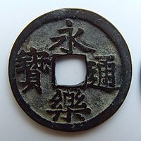

『貨幣の誕生―皇朝銭の博物誌』
公開日：
")
- 作者: 三上隆三
- 出版社/メーカー: 朝日新聞社
- 発売日: 1998/01
- メディア: 単行本
- クリック: 1回
- この商品を含むブログ (1件) を見る
奈良期から平安中期にかけて鋳造・発行された15種に及ぶ皇朝銭を、世界を視野に置きつつ社会的に考察。まじないの道具・縁起物として珍重された古代貨幣と社会・流通・古代人とのかかわりを探る。
密林なら古書でほぼゼロ円（＋送料：こういうのって送料で儲けてるっぽいね）で買える。お値段以上、ニトリ。
前半は洋の東西における貨幣の比較。これはむかし似たような本を読んだので、さらっと流した。
リンクをたどるのが面倒くさい人のために図を再掲しておくと、こんな感じ。
| 東洋の貨幣 | 西洋の貨幣 | |
|---|---|---|
|  |  |
|
| 形状 | 円形方孔 | 円形無孔 |
| 刻印 | 貨幣名（漢字4文字） | 権力者の肖像 |
| 材質 | 銅銭のみ（＋手形） | 金貨・銀貨・銅貨 |
| 製法 | 鋳造（目方は不均一） | 鍛造（目方が均一） |
| 性質 | 権威による保証に基づく名目的貨幣 | 材料それ自体の価値に基づく素材貨幣 |
| 私鋳の横行 | 計算貨幣（ミナ、タレント） |
インドは円形無孔、片側打刻で、西洋の影響が大きい。日本は中国の貨幣をマネしている。こういう違いが生まれたのは、地方によって産出する金属が違うからやね。

この地図はまた作り直したいんだけど、西洋は金・銀・銅が広く取れて、しかも地理的にも往来が容易だった。一方、東洋はあれだけ広いのに銅ぐらいしか産出しなかった。そのため、金貨・銀貨を流通させることができなかった。
あと、自分は知らなかったのだけど、古代の一時期は金よりも銀が高かったらしい。「雄弁は銀、沈黙は金」の意味も変わっちゃうね。
「鋤（スキ）」を貨幣の代わりに与える風習が中国にあったことも知らなかった。そもそも「銭」という文字が「鋤」を表していたらしい。日本の律令政府でも行われたことがあるとのことで、古代ではそういった実用物が貨幣の代わりに用いられることもあったんだな。「刀銭」もそういった文脈で把握されるべきものなのかもしれない。西洋では銅銭よりも価値の高いものは家畜や金・銀で決済できたので、スキやカタナに頼る必要はなかったんだろうね。
――さて、日本の場合。
『日本書紀』によれば、大化の改新（645年）の時に「大化」が用いられたのが最初であるとされる。以後、7世紀中後期には断続的に元号が用いられたことが『日本書紀』には書かれている。しかし、当時使われた木簡の分析によると、元号の使用は確認されていない。まだ7世紀後半は、元号よりも干支の使用が主流だったようである。文武天皇5年（701年）に「大宝」と建元し、以降継続的に元号が用いられることとなった。
神功皇后が熊襲よりも「金銀彩色多在其国」（朝鮮）を攻めようと思ったことでもわかるように、日本ではかつて、金・銀・銅の産出が乏しかった。なので、中国で貨幣が行われていることを知っていても、それを導入することができないでいた。
そこへ突如、対馬から国産の金が献上される。喜んだ朝廷は「大宝」と改元し（「宝」はずばり「金」を意味する）、これを寿いだ。
しかしこれは真っ赤なウソで、実は新羅経由でもたらされたものらしい。真相を知った朝廷は、“めでたい雲が出たので”という割と謎な理由で元号を「慶雲」に変えてしまう（実質的な日本最古の元号にこんな笑い話があるなんて知らなかったわｗ）。
慶雲5年（708年）、今度は武蔵国より和銅（天然の銅）が献上された。どうもこれは本当らしい（銅だけにｗ）。そこで「和銅」と改元され、「和同開珎」が鋳造されることになった。これが皇朝十二銭の始まりである。
しかし、貨幣流通は畿内にしかおよばず、結局、聖武天皇の時代を境に、日本はまた物々交換経済へと戻ってしまう*1。
まず、経済が貨幣を欲していなかった。作られた都市・平城京から少し離れれば、いまだに竪穴式住居が一般（？）であった時代に、貨幣を流通させようとしたのはさすがに無理があった。「貨幣スゴい！ 導入しよう！」と思い本当に実行した首脳部の慧眼と実行力には恐れ入るが……*2。
次に、私鋳が横行した。銅の素材価値＜法定価値で流通させ、シニョリッジ（通貨発行益）を得ようと目論めば、その利益が大きければ大きいほど私鋳を招く。和同開珎の鋳造開始直後から私鋳は横行し、ときには検非違使まで巻き込んで行われたという。歴史になかなかでてくることのない伊賀・名張（むかし住んでた）が私鋳の根城として出てきたときにはちょっと笑ってしまった。
最後に、素材としての銅が払底してしまった（多分これが決定打）。銅は金のように自然に取れるのは稀で（砂金とか）、多くは酸化銅・硫化銅などの化合物として存在するらしい。そのうち酸化銅からは木炭・吹子の技術があれば純銅を取り出せるが、硫化銅は山下吹と呼ばれる技術が室町時代に開発されるまで扱えなかった*3。火山国の日本では酸化銅は希少で、聖武天皇が大仏建立でばんばか使ううちにとりつくしてしまったらしい。朝廷は銅を多く含む初期の銭を鋳つぶしてまで鋳造に努めたものの、次第に材料が枯渇し、皇朝十二銭は時代を経るにつれて“鉛貨”と呼ぶべき代物に堕してしまう。平安期の仏像がおしなべて木造なのも、銅の枯渇によるという*4。
古来銅の製錬は酸化製錬法にのみよりしものにして、鉱石の品位高き場合においては、鞴風を掛け木炭を添加しつつ一炉一回に適量の粗銅を仕上げることを得べしかりも、中国、四国、九州の諸銅山にありては、採掘年代古く含銅品位高き部分はすでに掘り尽くし、残れるものは品位著しく低下せしものとなり、したがって旧来の製錬法にては鈹湯の量少なく、そのままにて真吹を続行するにはしだいに不便を感ずるに至れり。ここにおいて、文亀永正(西暦一五〇一～二〇年)の頃、銅屋新右衛門摂津国多田庄山下村において製錬所を設けて、この法を改良せり。この方法たる酸化製錬法にて鍰を除きつつ素吹に達し、ここにて一旦銅鈹を剥離し、作業を中止し、この方法を反復して銅鈹を集め、適量に達したる時、これをさらに炉に装入し、木炭の火力にてこれを熔融して硫黄分を駆逐し、鉄分は銅鍰(ドブ)となりて除去せられ、ついに粗銅を作るに至る。この時代において、吹大工一人指子一人にて一炉につき鈹六七十貫を処理したり。この方法を称して｢山下吹き法｣と言えり。これより貧鉱再び有利に稼行せらるることとなれり。
日本史を選択しなかったのであんまり知らんのだけど、「灰吹き法」ってのもあったなぁ。こういうのもいろいろ歴史を動かしているらしい。
この技術は石見銀山で用いられ、1542年には技術者が生野銀山に移住し、やがて全国に広まっていき、全国的に産金・産銀高を飛躍的に向上させたと言われており、16世紀から19世紀にかけての300年あまりの間、日本の産金、産銀を支え続けた。佐渡金山の周辺の遺跡からも、灰吹法に用いた鉛のインゴットが出土している。石見銀山の石州銀は中国人や日本人などを通じて中国に輸出され、経済流通の増加に伴う決済手段不足（マネーサプライの不足）、即ちデフレーションを防ぐ役割を果たして東洋における貿易を活性化させた。
：
：
日本国内の鉱石から製錬された粗銅は金銀を含んでいたが、15世紀の日本にはこれを銅から分離する技術が無かったため、古くからこの技術をもつ明や技術が伝来していた李氏朝鮮といった大陸諸国の商人は日本から購入した粗銅から金や銀を取り出す事で差益を得ていた。粗銅から金銀を取り出す精錬(合吹き、南蛮絞り、灰吹き)は、まず銅を鉛とともに溶かしてから徐々に冷却し、銅は固化するが鉛はまだ融解している温度に保つ。すると銅は次第に結晶化して純度の高い固体となって上層に浮かび、金銀を溶かし込んだ鉛が下層に沈む。この融解した状態の鉛を取り出して、骨灰の皿の上で空気を吹き付けることによって金銀を回収することが可能になり、安価な粗銅の形での海外流出が止んだ。
そしてもう一つ、本書で強調されているのは、厭勝銭としての貨幣。どうも、朝廷が決済のために導入を進めたにもかかわらず、その“古代的”な性格をついぞ脱しきれなかったらしい。
厭勝銭（ようしょうせん）は、銭をかたどった、護符の一種。災いを避け好運を願うため所持するものであり、貨幣として流通されるものではない。俗に「えんしょうせん」「あっしょうせん」とも読む。「厭勝」はまじないによる破邪を意味する。
表面は、通常の通貨を模すか、「千秋万歳」「天下太平」「長命富貴」「大宜子孫」「花生不老」といった吉祥語や、「去殃除凶」「万災永滅」「万病不侵」などの語句が刻まれる。背面は、やはり縁起の良い北斗、双魚、亀蛇（きだ）、竜鳳、新月といった図案や、そのほか人物や動物が刻まれる。背面に上述の吉祥語類が刻まれることもある。厭勝銭の形状は必ずしも銭形とは限らず長方形など様々で、おろし金のような形をしたものもある。
厭勝銭の起源は、讖緯説が流行した王莽の新の時代、あるいは前漢時代まで遡り、特に宋・唐以降も盛んに鋳造され、時代が下るにつれて趣味品としての性格も帯びていった。日本に伝来したものは絵銭・画銭として珍重され、室町時代から江戸時代にかけて親しまれた。
厭勝銭が成立した背景には貨幣経済の浸透という社会情勢があり、貨幣が持つ一種呪術的な力が銭という形に仮託されたと一般に考えられている。しかし前漢時代に鋳造された五銖銭に吉祥語を刻んだものがあったり、朝鮮半島や日本では中国から流入した五銖銭が副葬品として使われるなど、流通貨幣と厭勝銭は厳密に区分けできるものではない。
このころの政府発行の貨幣には四文字で元号＋「通宝」とか書かれていたけど、元号自体が割と縁起のいい文字を使うからね。ちょうどいい感じに転用されちゃったんだろう。冥銭（三途の川の渡し賃、西欧での死体に貨幣を含ませる風習）や建物を建てるときに礎石に埋める行為、生まれてくる子供を寿ぐとき、仏像に魂を込めるとき……などなど、現世での交換に貨幣を用いなかった人でも、あの世や超自然的なものとのやり取りには積極的に貨幣を用い、受容したのはちょっと興味深い話。僕らは 貨幣経済の浸透 → 厭勝銭 と考えがちだけど、貨幣経済の浸透 ← 厭勝銭 や、貨幣経済の浸透 ⇄ 厭勝銭 という関係でもとらえてみた方がいいのかもしれない。
奈良の大仏に金メッキする金がなかった話（奥州グッジョブ！ 水銀まぜてメッキするとか大変やなー）、藤原仲麻呂が金銭・銀銭・銅銭の鋳造をコンプリート（して、その後没落する）話、西大寺からでてきた“弧銭”「開基勝宝」の話、幻の銀貨「太平元宝」の話も面白く、個人的にはとても面白かった。もっと金・銀・銅の基本的性質、時代ごとの産地・製錬方法などもしっていれば、貨幣の歴史はもっと深掘りできそうだなーって思った（だれか、いい本知らない？）。